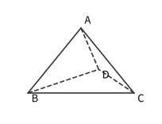

ホーム ＞ 数学I ＞ 図形の面積・空間図形の計量
例題 2図形と計量 正四面体の高さ・体積・内接球
1辺の長さが6の正四面体 ABCD について、頂点 A から底面 BCD に下ろした垂線の長さ（高さ）\(h\)、体積 \(V\)、内接球の半径 \(r\) を求めよ。

【答案（テストに書く形）】
\[h=2\sqrt6,\quad V=18\sqrt2,\quad r=\dfrac{\sqrt6}2\]答
ホーム ＞ 数学I ＞ 図形の面積・空間図形の計量
1辺の長さが6の正四面体 ABCD について、頂点 A から底面 BCD に下ろした垂線の長さ（高さ）\(h\)、体積 \(V\)、内接球の半径 \(r\) を求めよ。

【答案（テストに書く形）】
\[h=2\sqrt6,\quad V=18\sqrt2,\quad r=\dfrac{\sqrt6}2\]答